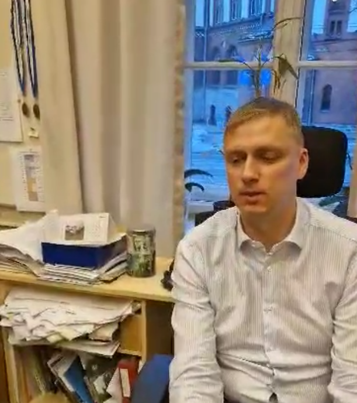
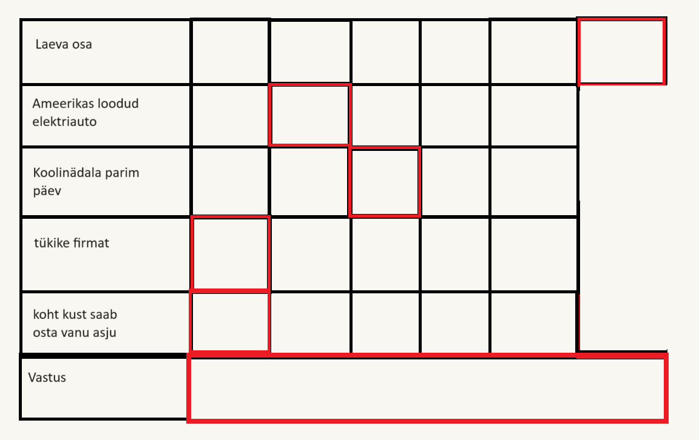

Eesti, Tallinn - NELJAPÄEV 15 VEEBRUAR, 2024 - Reaalikad
Tere! Hoiad käes Reaalse Lehe esimest numbrit, mis käsitleb nii Sixteni vaimset tervist, Eriku teatrikülastust kui ka palju muud. Tänapäevases kodu- ja kontrolltööde keerises oleks vahel hea võtta kätte ajaleht ja lugeda Sixten Suppikese vaimsest tervisest või sellest, mida arvab Roland oma sõprade arvamusest. Head lugemist!
Tehisintellekt: Kas õnnistus või needus?
Aron Mathias 2024.02.10
Tehisintellekt on masinate võime jäljendada inimeste vaimset tegevust läbi andmete tõlgendamise ja iseõppimise. Tehisintellekti rakendamine muudab ettevõtete protsesse kiiremaks, täpsemaks, kuluefektiivsemaks ja inimesest sõltumatumaks. Tehisintellekti areng on viimastel aastatel olnud väga kiire ja ulatuslik, tänu suurele andmehulgale, võimsale arvutusvõimele ja edusammudele algoritmides. Tehisintellekt on leidnud rakendust erinevates valdkondades, nagu tervishoid, haridus, transport, meelelahutus, turvalisus ja paljud teised. Tehisintellekt võimaldab luua uusi tooteid ja teenuseid, parandada olemasolevaid, optimeerida ressursikasutust, suurendada tootlikkust ja efektiivsust, vähendada vigu ja kulusid ja tõsta kvaliteeti. Tehisintellekt pakub inimkonnale palju võimalusi ja eeliseid, kuid samas ka esitab mitmeid väljakutseid ja riske. Tehisintellekt võib olla kasulik või kahjulik, sõltuvalt sellest, kuidas, kelle poolt ja millistel eesmärkidel seda kasutatakse, näitekas aitab tehisintellekt lahendada järgmisi globaalseid probleeme: Kliimamuutus: Olemasolevad tehisintellekti süsteemid sisaldavad tööriiste, mis ennustavad ilma, jälgivad jäämägesid ja tuvastavad reostust. Vaesus: Tehisintellekt saab vähendada vaesust pakkudes ligipääsu hariduse- ja tervishoiu ressurssidele. Haigused: Tehisintellekti kasutatakse meditsiinivaldkonnas, et analüüsida suuremahulisi kasvajaid ja ennustada patsientide reaktsiooni ravimitele täpsemini, kui läbi praeguste meetodite. Kuid samas võib ka põhjustada uusi probleeme, nagu tööpuudus, privaatsuse rikkumine, kuritarvitamine ja sõltuvus. Tehisintellekt tekitab ka eetilisi, õiguslikke ja sotsiaalseid küsimusi, nagu tehisintellekti vastutus, kontroll, usaldusväärsus, läbipaistvus, õiglus, turvalisus ja inimväärikus. Tehisintellekt võib nii täiendada, kui ka asendada inimtegevust ja inimotsustust. Tehisintellekt on seega nii õnnistus kui ka needus, olenevalt sellest, kuidas me seda mõistame, hindame ja kasutame. Tehisintellekt ei ole iseenesest hea ega halb, vaid selle mõju sõltub inimeste valikutest ja tegudest. Tehisintellekt ei ole ka paratamatu ega vältimatu, vaid selle areng ja rakendamine on inimeste kujundatud ja mõjutatud. Seetõttu on oluline, et me oleksime teadlikud ja vastutustundlikud tehisintellekti kasutajad ja loojad, kes arvestavad tehisintellekti eesmärke, tagajärgi ja piire. Me peame püüdlema sellise tehisintellekti poole, mis on inimkeskne, eetiline, õiglane ja jätkusuutlik, ning sellise tehisintellekti vastu, mis on inimvaenulik, ebaeetiline ja ohtlik.
Eesti üldhariduskoolide ebapiisav spetsialiseerumine
Artur 2024.02.13
Nagu igal teiselgi ministeeriumil Eestis, on haridusministeeriumil omad nõrgad ja tugevad küljed. See kehtib ka Haridus- ja Teadusministeeriumi kohta. Selles artiklis uurime täpsemalt üht probleemi: miks peab iga inimene õppima 15 erinevat õppeainet? Kui ühel esmaspäeva õhtul hakata õppima kaheks geograafia ja üheks bioloogia kontrolltööks, tekib küsimus, mille nimel ma seda õpin? Kui kooliõpilasel on selge visioon oma tulevikust, näiteks geograafiaõpetaja, siis miks õpib ta lisaks kümmet teist eriala? Selline haridusvorm valmistab õpilast ette kõigiks erialadeks, mida ta peale kooli lõpetamist valida võib. See võib olla kasulik, kui õpilane ei tea veel, millise eriala ta valida tahab, aga neile, kes on otsuse tuleviku üle juba teinud, on see hoopis ajaressursside ebaefektiivne kasutus.Hea lahendus sellele probleemile oleks parem spetsialiseerumine, heaks eeskujuks on ülikoolid: õpitakse ainult neid aineid, mis on tihedalt seotud õppija erialaga, mitte need, mille on määranud haridus- ja teadusministeerium. Selline lähenemine on juba olemas ka meie endi gümnaasiumis: kohustuslikke aineid on vähem, valikaineid rohkem, on 4 erinevat õppesuunda. Seda võiks aga rakendada juba ka progümnaasiumis, sest ka seal kasvab märgatavalt õppeainete hulk samal ajal kui hädavajalike unetundide arv ei kahane. Selline süsteem oleks lihtsam ka õpetajatele - nad ei peaks tegelema õpilastega, kes ei taha ainet õppida ning saaksid keskenduda neile, kes kasutavad õpitavaid teadmisi oma tuleviku karjääris. Vähem õpilaste arv tähendab väiksemat koormust õpetajate jaoks, mistõttu on selline lahendus kasulik ka õpetajatele.
Intervjuu Daniel Kaasikuga
Roland 2024.02.06
textDaniel Kaasik
text"quote"text
Reportaaž ,,Miks me varastasime auto’’
Erik 2024.02.05
Eile, 4. veebruaril käis Tallinna Reaalkooli 8.c klass vaatamas näidendit ,,Miks me varastasime auto’’. Näidend pidi algama kell 15.00, kuid juba kolmveerand kolme paiku oli fuajee täis edevust ning ärevust. Mõned õpilased olid juba varakult kohale ilmunud, kuid osad proovisid õnne ning saabusid viimasel hetkel. 10 minutit enne algust lasti külalised väikesesse saali, mis oli täis õpilasi: kaheksandikke, seitmendikke ning veelgi nooremaid, sekka ka mõni õpetaja. Näidend rääkis huvitava mõtteviisiga teismelisest Maikist, kelle elu kulgeb üsna õnnetult. Ühel päeval tuleb tema klassi ükskõikse mõtteviisiga vene poiss Tšikk, kes varastab auto ning teeb Maikile ettepaneku varastatud rekkas koos paar tiiru teha. Maik nõustub poolsunniviisiliselt ning väikesest tiirust saab seiklus ümber Saksamaa. Nendega juhtub palju huvitavaid vigureid ning nad kohtavad paljusid omapäraseid tegelasi: sõdurit, arsti, politseinikke ja lihtsalt külahulle. Näidendi esimene vaatus kestis poolteist tundi ning oli väga kaasahaarav, jättes huvisädeme ka järgmiseks vaatuseks. Teine vaatus oli veelgi põnevam: laval kasutati lavatossu ja pritsiti vett. Näidend lõppes filosoofilise mõttevahetusega oma koha leidmisest elus. Vaheajal sai kohvikust osta maitsvaid pirukaid, küpsiseid või mahla. Paljud õpilased vaatasid ringi Noorsooteatri poes, kust sai osta põnevaid nukke või vahetasid etendusest muljeid. Mõned noored otsustasid aga terve vaheaja telefonis passida. Pärast näidendit suundusid õpilased koju. Küsimusele, millest pani näidend Sind mõtlema, vastas Aron: “See näidend pani mind mõtlema armastusest - kas armastus on päris, kas armastus on tänapäeval veel olemas? Kõik, mis Sa näed on inimesed, kes petavad üksteist, kuna neil hakkab “igav”. Mind huvitab ka, kas igale inimesele leidub paariline siin maailmas, kas igaühele on see üks ja ainus või kas mõned on määratud elu lõpuni elama üksi.”
Vaimse tervise nurk ja ülevaade Rolandi lemmikautost
Sixten & Roland 2024.02.01
David Gogginsi raamat 'Can't Hurt Me' tõstab esile loo, mis on täis raskusi ja vaimset valu. Raamatus käsitletakse piiride ületamise võlu, pannes lugejad mõistma, et neil on sisemine jõud, mida nad ei pruugi veel avastanud olla. Goggins tutvustab inspireerivaid mõisteid/mõtteid nagu '40% reeglit’, väites, et kui su mõistus ütleb sulle, et oled lõpetanud, oled tegelikult lõpetanud alles 40%. Autori elulugu algab keerulisest lapsepõlvest, tuues välja, kuidas elu võib olla südantlõhestav ning kuidas isiklikud raskused võivad muutuda ahelaks, millest on raske vabaneda. Kuid tema lugu ei ole mitte ainult vastuoludest, vaid ka võitudest. 'Can't Hurt Me' rõhutab, kuidas isiklikud katsumused saavad olla platvormiks suurtele saavutustele. See raamat innustab lugejaid seadma endale kõrgemaid eesmärke, ületama takistusi ja arendama vaimset vastupidavust. Gogginsi sõnum on selge: meil kõigil on potentsiaal muuta oma elu ja kujundada endast parem versioon.
Mercedes SL300
Mercedes Sl 300 on legendaarne ja tuntud vana klassik. Nimes olev SL tähendas super-leicht ehk väga kerge. Seda toodeti aastast 1989 kuni 1993. Auto on tuntud oma üleskäivate uste poolest, mis valiti selleks, et auto kere all olev toru raam mahuks ära. Seda raami kasutati, sest auto oli mõeldud võidu sõitmiseks, mida lubas ka 6 - silindriline 3 - Liitrine mootor. See mootor oli üks esimestest, mis kasutas mootoriplokki kohal asuvaid nukkvõlle, mida konkurendid polnud veel kasutusele võtnud. Autost loodi ka lahtise katusega versioon, mis tuli paar aastat hiljem. Tänapäeval on auto väga ihaldatud, sest neid tehti suhteliselt vähe.
Lahenda see ristsõna ja osale 1000 euro loosis!